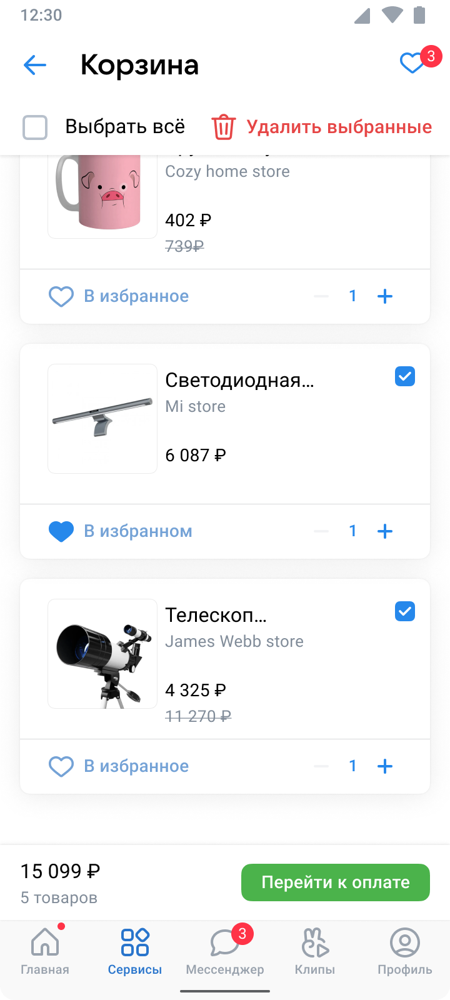
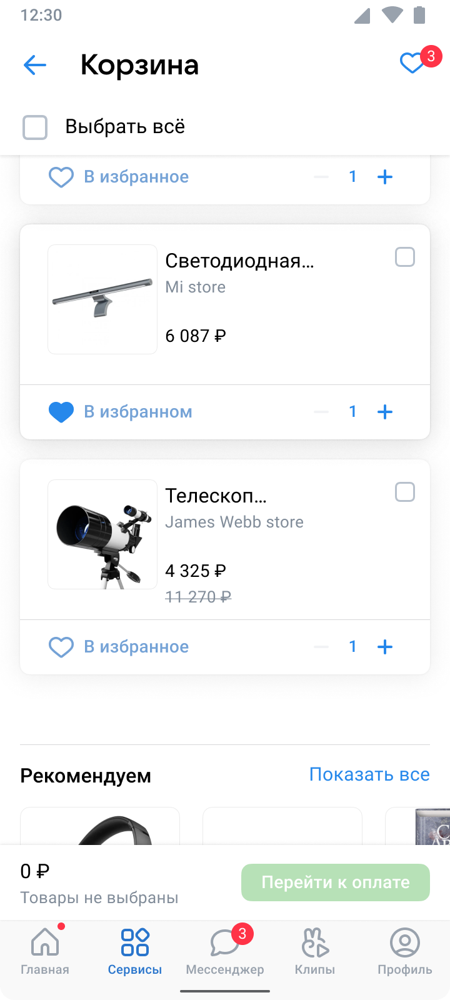
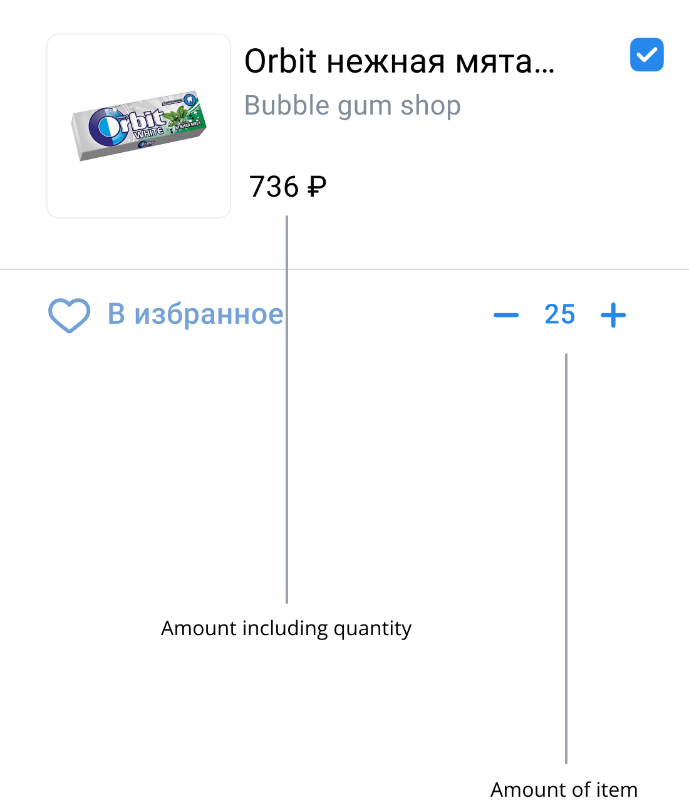
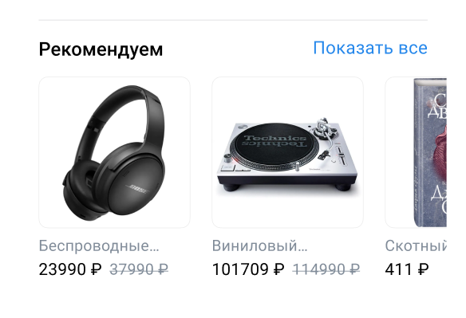
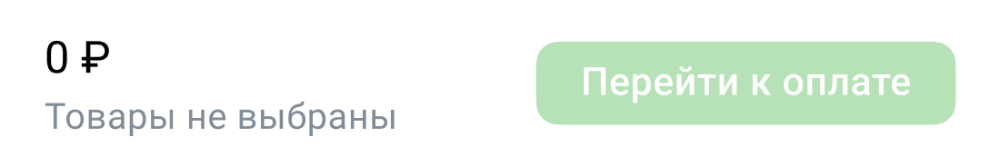

Task
To create a VK Market-Cart interface that facilitates convenient and practical shopping.
Research
I conducted three separate interviews with VK users regarding the functionality of the market-cart. All users provided the following feedback:
- Not all items can be added to cart.
- If there is a product already in the cart and you switch to another product card, the cart becomes empty.
- The products are not being added together when added to the cart.
- There are multiple copies of the cart within the cart.
Problem
After attentively listening to the users, I identified a primary issue where established patterns and behaviors are being disrupted when using current market-cart.
Solution
If we examine the function within the context of the entire VK-Market product, it may be worth considering the removal of multiple market-carts and instead implementing a single, centralized market-cart that can accommodate all products added from the Market section.
Prototype
Chosen all items
Chosen part of items

Not chosen

Header
The "Bookmark" icon has been replaced with a "Heart" icon, as it better conveys the idea that the user has liked a product. The "Heart" symbol is more commonly used and familiar to users. Before making a purchase, a user may add liked items to their cart.

The option to select all products and delete them quickly has been added. If specific items have already been chosen, they can also be promptly removed from the shopping cart.
Card of product
The product card displays the name of the product, the store name, both the new and old prices, as well as a product photo. Users can select individual products by using the checkbox, adjust the quantity of the product, and add or remove it from their favorites.

Recommends card

At the bottom of the product list, the system provides product recommendations that may be of interest to the user.
Total card

The "Total" card, which includes a link and is highlighted in a separate color according to the design system, is consistently displayed on the screen and fixed in position when scrolling. This card provides information on the total sum and quantity of the selected products.
Empty market-cart